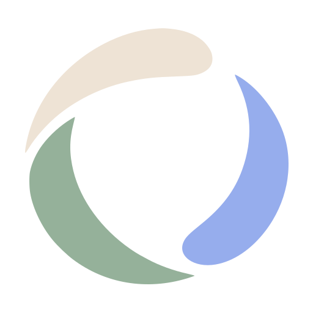

OTOHA GRAPH历史推导 · L0–L6
model / start here
先只有
节点和边。
上一版讲得太快了。现在我们把模型拆成台阶：先理解“图是什么”，再决定什么时候需要方向、关系名、类型、属性和约束。每一步都可以停下来，不必一次把整个工程系统塞进数学定义。
历史工作版本最小图从
G₀ = (V, E) 开始。下面的故事会逐步增加结构；所选台阶表示当时的推导，不构成当前规范。L0 / foundation
节点与边
G₀ = (V, E)
最小结构 · 不预设语义
same example / more structure
同一个小例子，逐层变清楚
四个对象始终不变。改变的是我们允许图表达的事实数量。这样更容易发现：某个新增结构到底解决了什么，还是只是让格式变复杂。
now added
still not decided
保留未知
model lab / iterative
历史实验：按旧分层给出提示
下方是旧版按关键词匹配分层的演示，不是当前模型的分析器。当前方向允许普通 Properties，通过 Template 解释业务语义。
等待你的要求。
写一句你想新增、放宽或收紧的建模规则。
写一句你想新增、放宽或收紧的建模规则。
先证明最小模型表达不了它 STEP 01
再决定新增一层结构 STEP 02
最后写正例和反例 STEP 03